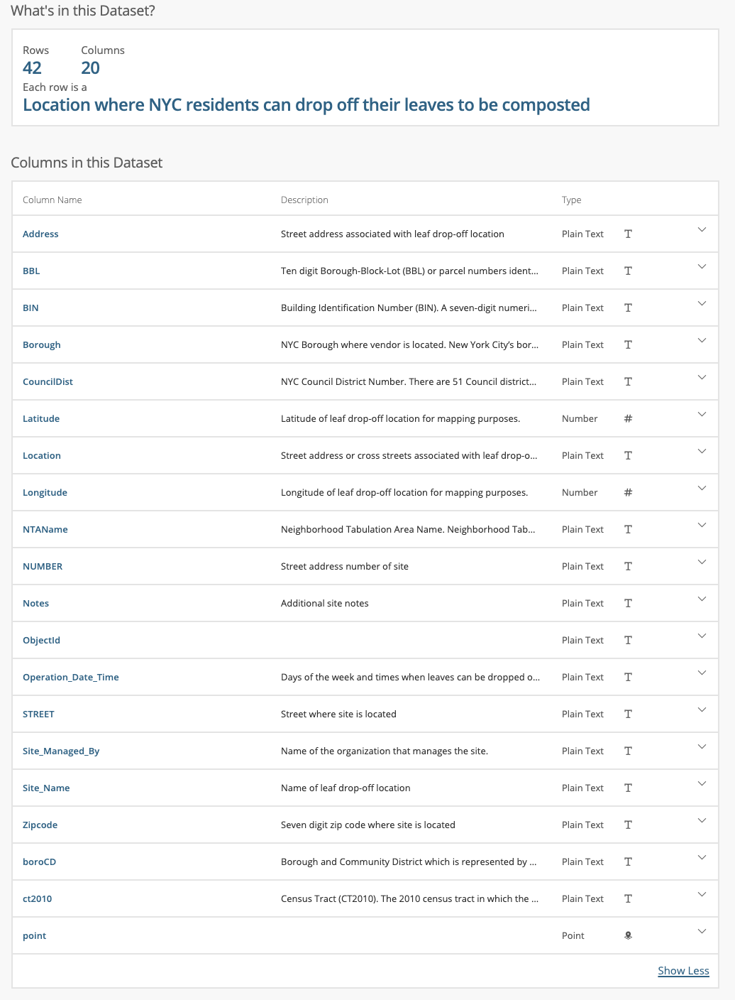
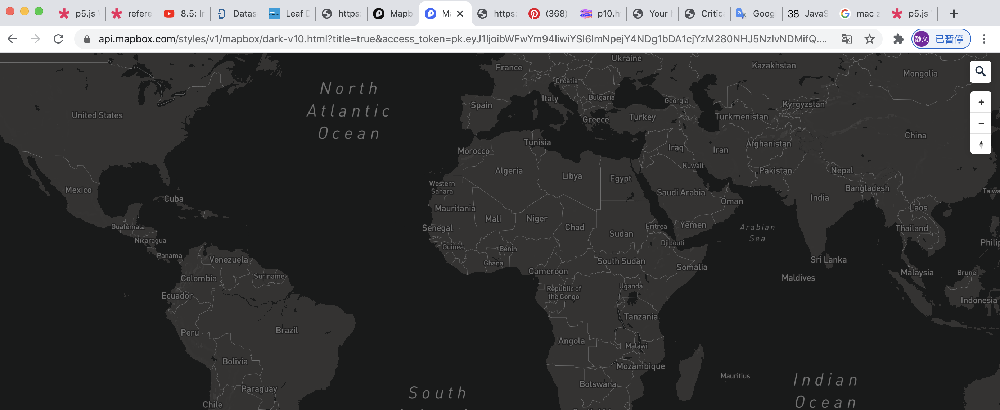

Leaf Drop Off Map
Description
In this project, I retrieve the dataset “Leaf Drop-Off Locations in NYC” from NYC Open Data, and a world map from Mapbox through their APIs to make an interavtive map. By using this map, users can get the information needed from each leaf drop-off bin and visualize their own positions on map for further comparison.
在这个项目中，我从NYC Open Data获得了数据集“ NYC的下车地点”，并通过其API从Mapbox提取一张世界地图来制作一张交互式地图。 通过使用此地图，用户可以从每个叶子下车箱中获取所需的信息，并可视化自己在地图上的位置以进行进一步比较。
Design Process
My first thought is to find a suitable dataset, which has an easily accessible API and multiple dimensions worth visualization. Our professor recommend the website NYC OpenData and I get this one from it, “Leaf Drop-Off Locations in NYC”.
我的第一个想法是找到一个合适的数据集，该数据集具有易于访问的API和值得可视化的多个维度。 我们的教授推荐了网站NYC OpenData，而我从中得到的网址是“ NYC的下车地点”。
 
I have always wanted to do something related to environmental protection, but this topic is too broad to find a starting point. Finding out the nearest leaf drop-off bin seems meaningless at the first glance, but can help encourage residents to adapt to garbage classification and collection. So I decide to make a practical tool to in this area.
我一直想做一些与环境保护有关的事情，但是这个话题太宽泛，找不到起点。 乍一看，找出最近的垃圾收集站似乎毫无意义，但可以帮助鼓励居民适应垃圾分类和收集。 因此，我决定在此领域中开发实用工具。
The dataset offers the longitude and latitude number of each location, so my next thought is to make an interactive map. Then I retrieve a world map from Mapbox and only demonstrate the district I need on my canvas. To better explain its usage, I design a small animation of fallen leaves.
数据集提供每个位置的经度和纬度数，因此我的下一个想法是制作一个交互式地图。 然后，我从Mapbox检索了世界地图，只在画布上演示了我需要的区域。 为了更好地解释其用法，我设计了一个落叶的小动画。
I use this small icon to mark out the locations so that I can add other important information on it, including exact address and operation time. But still not that easy to find the easiest point instantly. Then I think comparison can make a clearer visualization, so I add an input box for users to upload their location.
我使用这个小图标来标记位置，以便我可以在上面添加其他重要信息，包括确切的地址和操作时间。 但是仍然不是那么容易立即找到最简单的点。 然后，我认为比较可以使可视化更加清晰，因此我添加了一个输入框，供用户上传其位置。